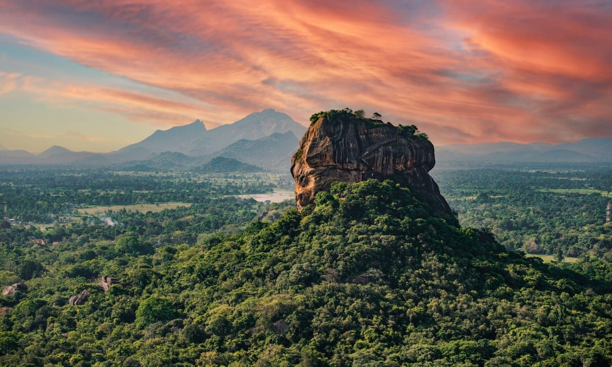
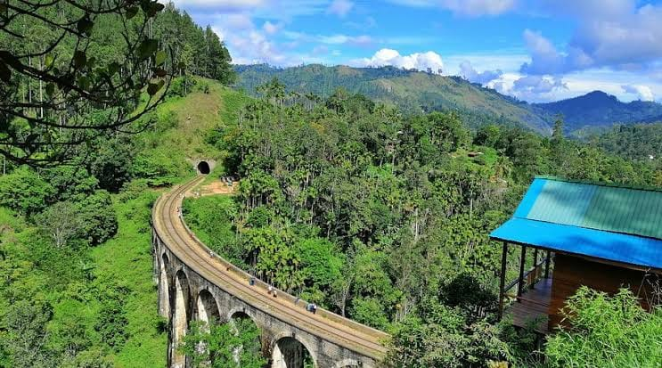
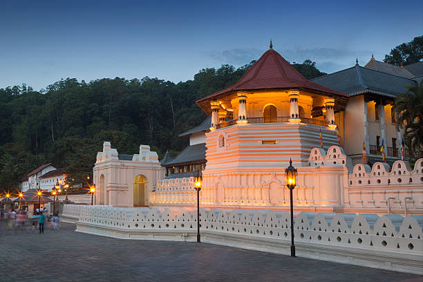
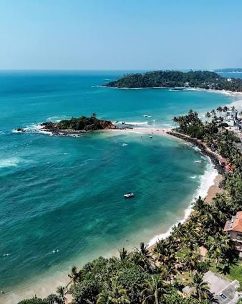

An Island Escape
Awaits You
Ancient royal cities, sacred stupas, rock fortresses, and timeless island traditions.
Explore Heritage →Golden beaches, surfing bays, coral reefs, and tropical island getaways.
Explore Beaches →National parks, elephant herds, rainforests, lagoons, and botanical gardens.
Explore Wildlife →Misty tea hills, scenic viewpoints, mountain trails, and cascading waterfalls.
Explore Highlands →
Ancient palace ruins, frescoes, landscaped gardens, and sweeping views.

Misty tea hills, lush forest slopes, and iconic highland railway views.

Sacred heritage shrine, traditional drumming, and royal Kandyan history.

Golden southern sands, coastal sunsets, and unforgettable ocean moments.
Get all 25 districts, top attractions, best visiting months, 7/10/14-day travel itineraries, and daily budget sheets in one clean printable PDF. Complete direct bank transfer & get instant access code.
Traveler Story
“Wildlife safaris, ancient temples, and golden coastlines—Sri Lanka truly brings so much variety together in one island.”
Sofia Rossi • Italy
Traveler Story
“Climbing at sunrise and walking through misty tea country felt unforgettable. Every region has its own character.”
Haruto Sato • Japan
Plan Your Trip
Essential Travel Notes
Tap on any district below to jump directly to its individual travel destinations.
Each destination has its own unique ID, detailed description, highlights, and best visit timing.